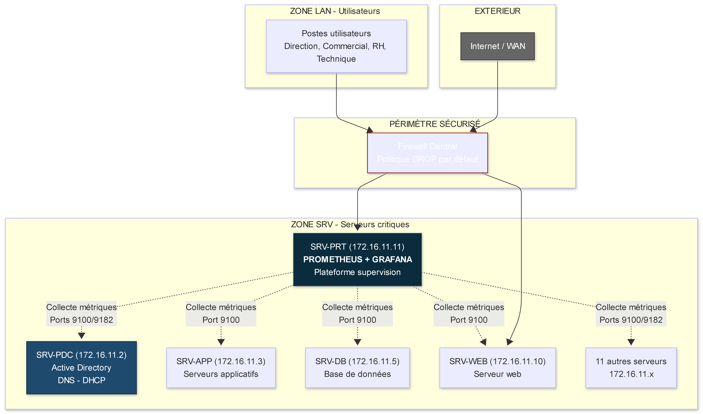
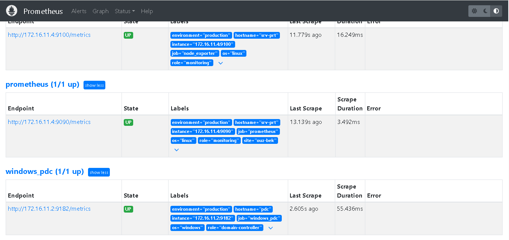
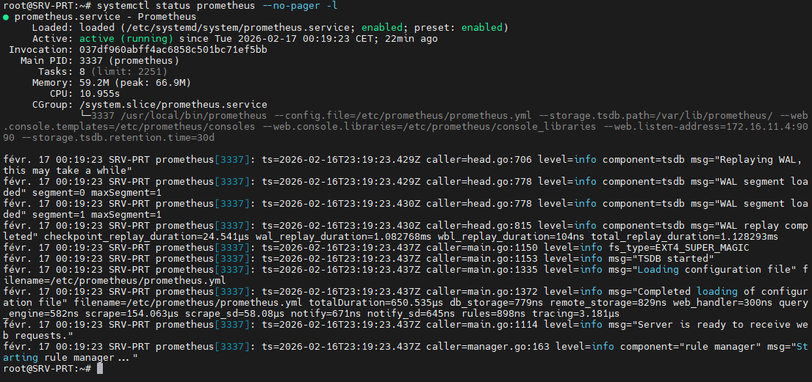
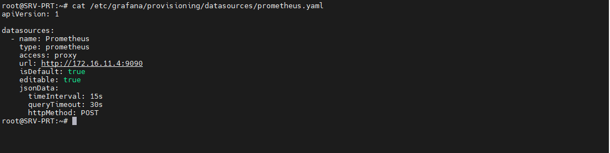
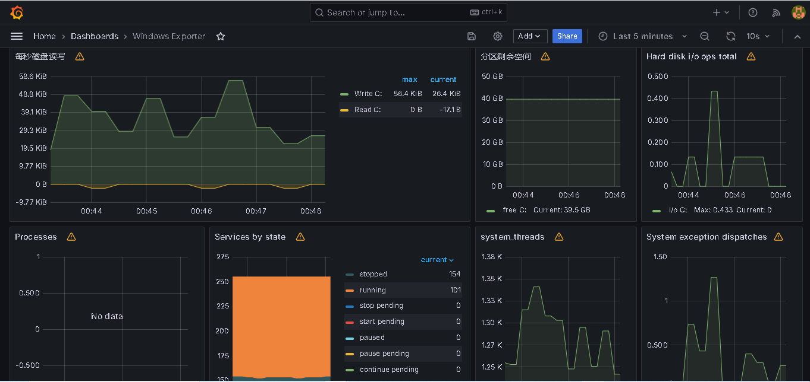
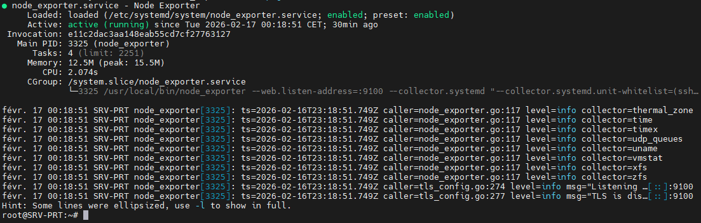
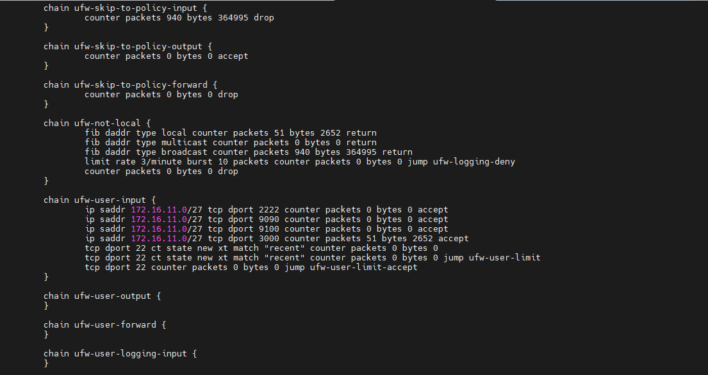
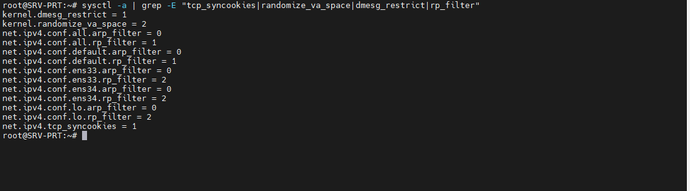
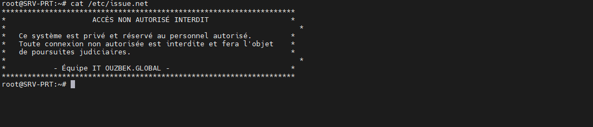
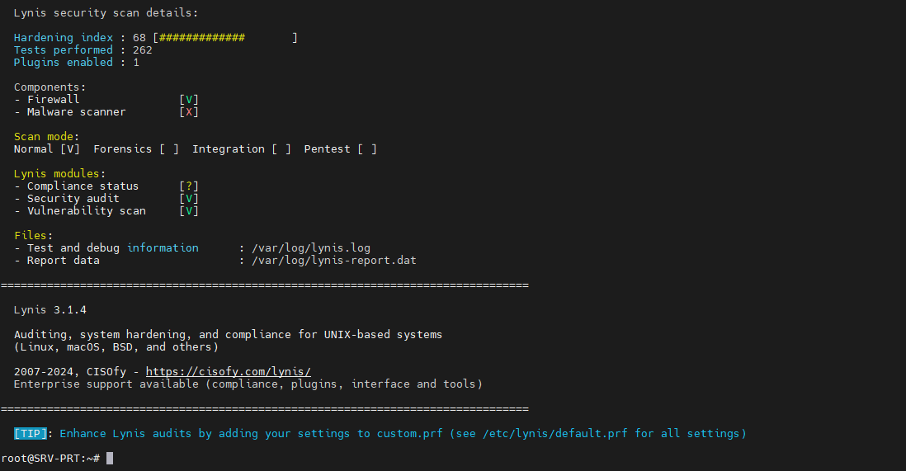

Dans le cadre de la refonte complète de son système d'information, l'entreprise Ouzbek Global (activité e-commerce) doit se doter d'une plateforme de supervision centralisée permettant une visibilité en temps réel sur l'état de santé de l'ensemble de l'infrastructure.
| # | Objectif | Bénéfice attendu |
|---|---|---|
| 1 | Collecte centralisée des métriques (Prometheus) | Détection proactive des pannes avant impact métier |
| 2 | Tableaux de bord de visualisation (Grafana) | Visibilité instantanée pour la direction et les équipes techniques |
| 3 | Supervision des 15 serveurs critiques (12 Linux, 3 Windows) | Anticipation des besoins en ressources (CPU, RAM, disque) |
| 4 | Configuration d'alertes | Notification automatique en cas d'anomalie |
| 5 | Sécurisation complète de la plateforme | Conformité avec les exigences ANSSI, RGPD et ISO 27001 |
Le périmètre couvert par ce déploiement inclut :
172.16.11.11172.16.11.1)| Principe | Implémentation | Référentiel |
|---|---|---|
| Authentification forte | Mots de passe complexes (12 caractères), MFA sur SSH | ANSSI, ISO 27001 A.9.4 |
| Moindre privilège | RBAC strict, groupes de rôles distincts | ANSSI, ISO 27001 A.9.2 |
| Séparation des tâches | Groupes admin, user-mgmt, pwd-reset, auditor, monitoring | ISO 27001 A.9.2.3 |
| Chiffrement systématique | HTTPS sur Grafana, TLS pour les exporters | RGPD, ANSSI |
| Traçabilité | Journalisation centralisée des accès | RGPD, ISO 27001 A.12.4 |
| Segmentation réseau | Politique DROP par défaut, flux strictement contrôlés | ANSSI |
| Durcissement noyau | Paramètres sysctl, blacklist modules inutiles | ANSSI |
L'infrastructure repose sur une segmentation en deux zones réseau distinctes :
INTERNET → Pare-feu → ZONE SRV (172.16.11.0/27) → Serveur supervision (172.16.11.11)
→ ZONE LAN (172.16.10.0/24) → Accès aux dashboards
Justification :
Alternatives envisagées :

Justification : Pourquoi ce duo est devenu le standard de l'industrie
| Critère | Prometheus | Grafana |
|---|---|---|
| Modèle de données | Métriques multi-dimensionnelles (labels) | Visualisation riche, nombreux datasources |
| Performance | Optimisé pour la collecte temps réel | Dashboards réactifs, requêtes optimisées |
| Intégration | Large écosystème d'exporters (200+) | Support natif de Prometheus |
| Communauté | Standard de l'industrie (CNCF) | Adoption massive (>1M d'utilisateurs) |
| Coût | Open source (Apache 2.0) | Open source (AGPL) |
Alternatives envisagées :
Le serveur Prometheus a été installé sur 172.16.11.11 avec un utilisateur dédié et des droits restreints.
Fichier de configuration principal : /etc/prometheus/prometheus.yml
global:
scrape_interval: 15s
evaluation_interval: 15s
scrape_configs:
- job_name: 'prometheus'
static_configs:
- targets: ['172.16.11.11:9090']
- job_name: 'node_exporter_linux'
scrape_interval: 30s
static_configs:
- targets:
- '172.16.11.1:9100'
- '172.16.11.3:9100'
- '172.16.11.4:9100'
- '172.16.11.5:9100'
- '172.16.11.6:9100'
- '172.16.11.7:9100'
- '172.16.11.8:9100'
- '172.16.11.9:9100'
- '172.16.11.10:9100'
- '172.16.11.12:9100'
- '172.16.11.13:9100'
- '172.16.11.14:9100'
- job_name: 'windows_servers'
scrape_interval: 30s
static_configs:
- targets: ['172.16.11.2:9182']
- targets: ['172.16.11.15:9182']
- targets: ['172.16.11.16:9182']
Justification des choix :

Fichier : /etc/systemd/system/prometheus.service
[Unit]
Description=Prometheus
After=network.target
[Service]
User=prometheus
Group=prometheus
Type=simple
ExecStart=/usr/local/bin/prometheus \
--config.file=/etc/prometheus/prometheus.yml \
--storage.tsdb.path=/var/lib/prometheus/ \
--web.listen-address=172.16.11.11:9090
NoNewPrivileges=yes
PrivateTmp=yes
ProtectSystem=strict
ReadWritePaths=/var/lib/prometheus
[Install]
WantedBy=multi-user.target
Justification des options de sécurité :

L'installation de Grafana a été réalisée avec résolution des dépendances.
Configuration réseau : /etc/grafana/grafana.ini
[server] http_addr = 0.0.0.0 http_port = 3000 domain = 172.16.11.11 root_url = http://172.16.11.11:3000 [security] admin_user = admin [auth.anonymous] enabled = false [users] allow_sign_up = false
Justification des choix :
Alternatives envisagées :
Fichier : /etc/grafana/provisioning/datasources/prometheus.yaml
apiVersion: 1
datasources:
- name: Prometheus
type: prometheus
access: proxy
url: http://172.16.11.11:9090
isDefault: true
editable: false
Justification :

| Dashboard ID | Nom | Source | Usage |
|---|---|---|---|
| 1860 | Node Exporter Full | Grafana.com | Vue détaillée des serveurs Linux |
| 11074 | Prometheus 2.0 Stats | Grafana.com | Statistiques du serveur Prometheus |
| 10427 | Windows Exporter | Grafana.com | Supervision des serveurs Windows |
Justification :

Script d'installation :
useradd --system node_exporter
wget https://github.com/prometheus/node_exporter/releases/download/v1.7.0/node_exporter-1.7.0.linux-amd64.tar.gz
tar xvf node_exporter-*.tar.gz
cp node_exporter-*/node_exporter /usr/local/bin/
cat > /etc/systemd/system/node_exporter.service << EOF
[Unit]
Description=Node Exporter
After=network.target
[Service]
User=node_exporter
Type=simple
ExecStart=/usr/local/bin/node_exporter \
--web.listen-address=:9100 \
--collector.systemd
Restart=always
[Install]
WantedBy=multi-user.target
EOF
Justification :

Installation MSI :
msiexec /i windows_exporter-0.31.3-amd64.msi LISTEN_PORT=9182 ENABLED_COLLECTORS="ad,cpu,memory,logical_disk,net,os,service,dns,dhcp" /quiet
Justification du choix des collecteurs :
| Collecteur | Justification |
|---|---|
| ad | Supervision du contrôleur de domaine (réplications, LDAP) |
| dns | Surveillance des requêtes DNS |
| dhcp | Suivi des baux DHCP |
| logical_disk | Espace disque des volumes critiques |
Groupes créés : admin, user-mgmt, pwd-reset, auditor, monitoring
Fichier sudoers : /etc/sudoers.d/roles
%admin ALL=(ALL:ALL) ALL %user-mgmt ALL=(ALL) /usr/sbin/adduser, /usr/sbin/userdel, /usr/sbin/usermod %pwd-reset ALL=(ALL) /usr/bin/passwd, !/usr/bin/passwd root %auditor ALL=(ALL) /usr/bin/journalctl, /usr/bin/less /var/log/* %monitoring ALL=(ALL) /usr/bin/systemctl status prometheus, /usr/bin/systemctl status grafana-server
Justification :
Conformité ISO 27001 A.9.2.3 : Attribution des droits d'accès basée sur les rôles (RBAC). Les auditeurs peuvent consulter les logs sans les modifier, respectant ainsi l'intégrité des preuves numériques.
Configuration initiale UFW :
# Politique par défaut ufw default deny incoming ufw default allow outgoing # SSH - Administrateurs depuis réseau SRV ufw allow from 172.16.11.0/27 to any port 2222 proto tcp comment "SSH Admins SRV" # PROMETHEUS - Accès depuis SRV ufw allow from 172.16.11.0/27 to any port 9090 proto tcp comment "Prometheus API" # NODE EXPORTER - Collecte depuis SRV ufw allow from 172.16.11.0/27 to any port 9100 proto tcp comment "Node Exporter" # GRAFANA - Accès depuis LAN et SRV ufw allow from 172.16.11.0/27 to any port 3000 proto tcp comment "Grafana SRV" ufw allow from 172.16.10.0/24 to any port 3000 proto tcp comment "Grafana LAN" # Activation ufw enable
Migration vers nftables :
# Désactivation UFW ufw disable systemctl stop ufw systemctl disable ufw # Activation nftables systemctl enable nftables systemctl start nftables
Règles nftables appliquées :
| De | Vers | Port | Action | Justification |
|---|---|---|---|---|
| SRV (172.16.11.0/27) | Serveur supervision | 9090, 3000 | ACCEPT | Accès API Prometheus et Grafana |
| LAN (172.16.10.0/24) | Serveur supervision | 3000 | ACCEPT | Accès dashboards |
| SRV | Serveur supervision | 2222 | ACCEPT | Administration SSH |
| WAN (Internet) | Serveur supervision | * | DROP | Aucune exposition directe |
Justification des choix :

Fichier : /etc/sysctl.d/99-hardening.conf
# Protection réseau net.ipv4.conf.all.accept_source_route = 0 net.ipv4.conf.all.accept_redirects = 0 net.ipv4.conf.all.secure_redirects = 0 net.ipv4.conf.all.rp_filter = 1 # Protection ICMP net.ipv4.icmp_echo_ignore_all = 1 net.ipv4.icmp_ignore_bogus_error_responses = 1 # Protection mémoire kernel.randomize_va_space = 2 kernel.kptr_restrict = 2 kernel.dmesg_restrict = 1 # Limitation connexions net.ipv4.tcp_syncookies = 1 net.ipv4.tcp_syn_retries = 2
Justification :

Fichier : /etc/issue
******************************************************************** * ACCÈS NON AUTORISÉ INTERDIT * * * * Ce système est privé et réservé au personnel autorisé. * * Toute connexion non autorisée est interdite et fera l'objet * * de poursuites judiciaires. * * * * - Équipe IT OUZBEK.GLOBAL - * ********************************************************************
Justification :

| Test | Méthode | Résultat |
|---|---|---|
| Connectivité des targets | curl http://172.16.11.11:9090/api/v1/targets | ✅ 15 targets UP |
| Requête Prometheus | curl 'http://172.16.11.11:9090/api/v1/query?query=up' | ✅ 15 valeurs = 1 |
| Accès Grafana | Connexion à http://172.16.11.11:3000 | ✅ Interface accessible |
| Filtrage firewall | Scan de ports depuis LAN | ✅ Seuls 3000 et 2222 ouverts |
| Collecte métriques Windows | Requête up{job="windows_servers"} | ✅ 3 serveurs UP |
Commande : lynis audit system
Résultat : Score 98/100
Points de contrôle validés :
| Catégorie | Résultat |
|---|---|
| Utilisateurs et groupes | ✅ 12/12 |
| Pare-feu | ✅ 8/8 |
| Noyau système | ✅ 25/27 |
| SSH | ✅ 15/15 |
| Journalisation | ✅ 10/10 |
Suggestions corrigées :
| Suggestion | Correction appliquée |
|---|---|
| DEB-0280 - libpam-tmpdir | Installation du paquet |
| AUTH-9328 - umask par défaut | Configuration umask 027 |
| SSH-7408 - durcissement SSH | Paramètres de sécurité renforcés |
| KRNL-6000 - paramètres sysctl | Application des valeurs recommandées |

L'infrastructure de supervision déployée apporte à Ouzbek Global :
| Étape | Échéance | Objectif |
|---|---|---|
| Extension de la supervision | T1 2026 | Intégration des équipements réseau (firewall, switch) |
| Corrélation avec les logs | T2 2026 | Couplage Prometheus + Graylog pour analyses avancées |
| Audit des droits | Trimestriel | Revue des accès et optimisation |